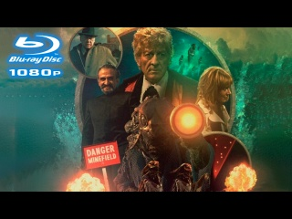
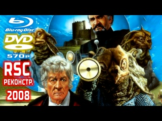
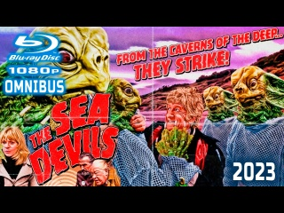
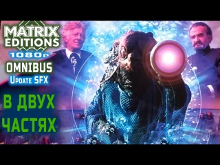
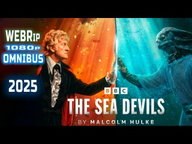
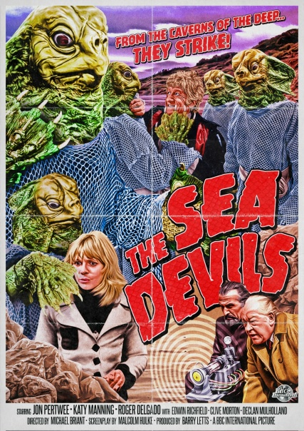

Субтитры: Русские и Английские |  |
|---|---|
+ RSC реконструкция цвета, 2008 (эпизоды 1-3) Субтитры: Русские и Английские |  |
Субтитры: только Английские |  |
с обновлением визуальных эффектов (cunningmunki) Субтитры: отсутствуют |  |
Субтитры: Русские и Английские |  |
| 1-3 эпизоды найдены в 525-строчном формате NTSC в 1980-х годах * Преобразованы RSC (NTSC-в-PAL) 4-6 эпизоды сохранились в цвете (видеокассета PAL 2") |
|---|
|
У побережья таинственно исчезают корабли, и Доктор с Джо подключаются к расследованию. Причина — пробуждение морских дьяволов, водных родственников силурианцев: они выходят из спячки и готовят масштабное вторжение на сушу. Доктор пытается договориться, но время на переговоры стремительно тает, а военные склоняются к жёсткому решению. Серия примечательна тем, что углубляет лор силурианской ветви древних обитателей Земли и показывает конфликт, где ни одна сторона не выглядит однозначно правой.
 VHS - сентябрь 1995 |  DVD+Boxset - 14 января 2008 |  Blu-ray - 20 марта 2023 * Версия в нашей группе |
|---|


